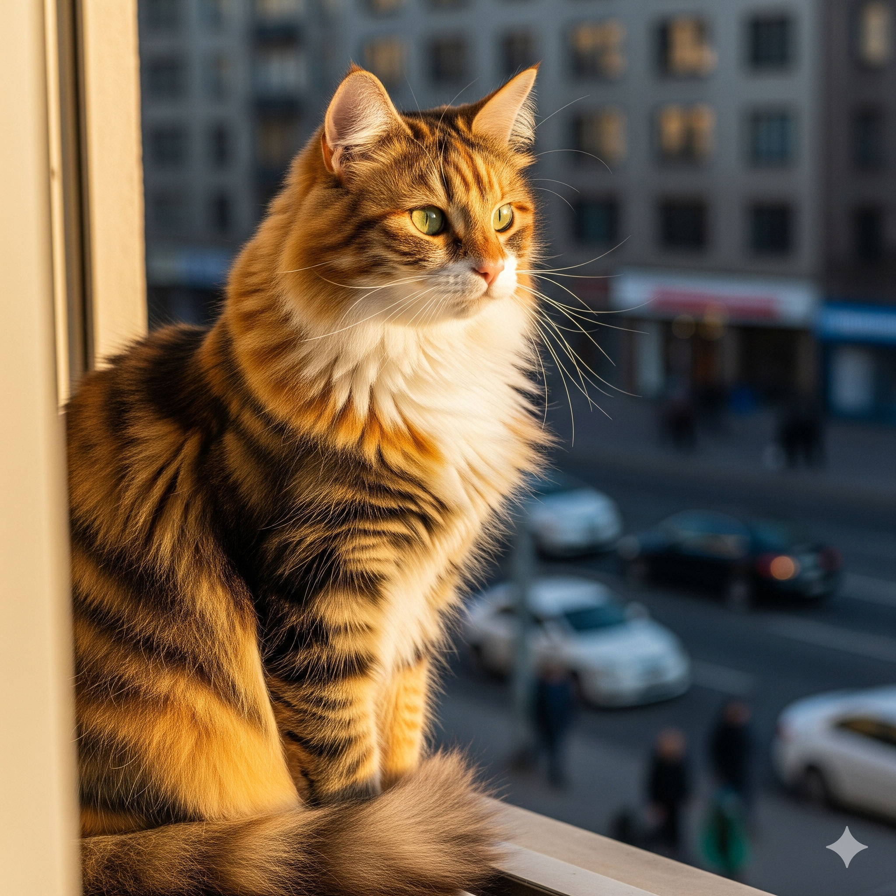
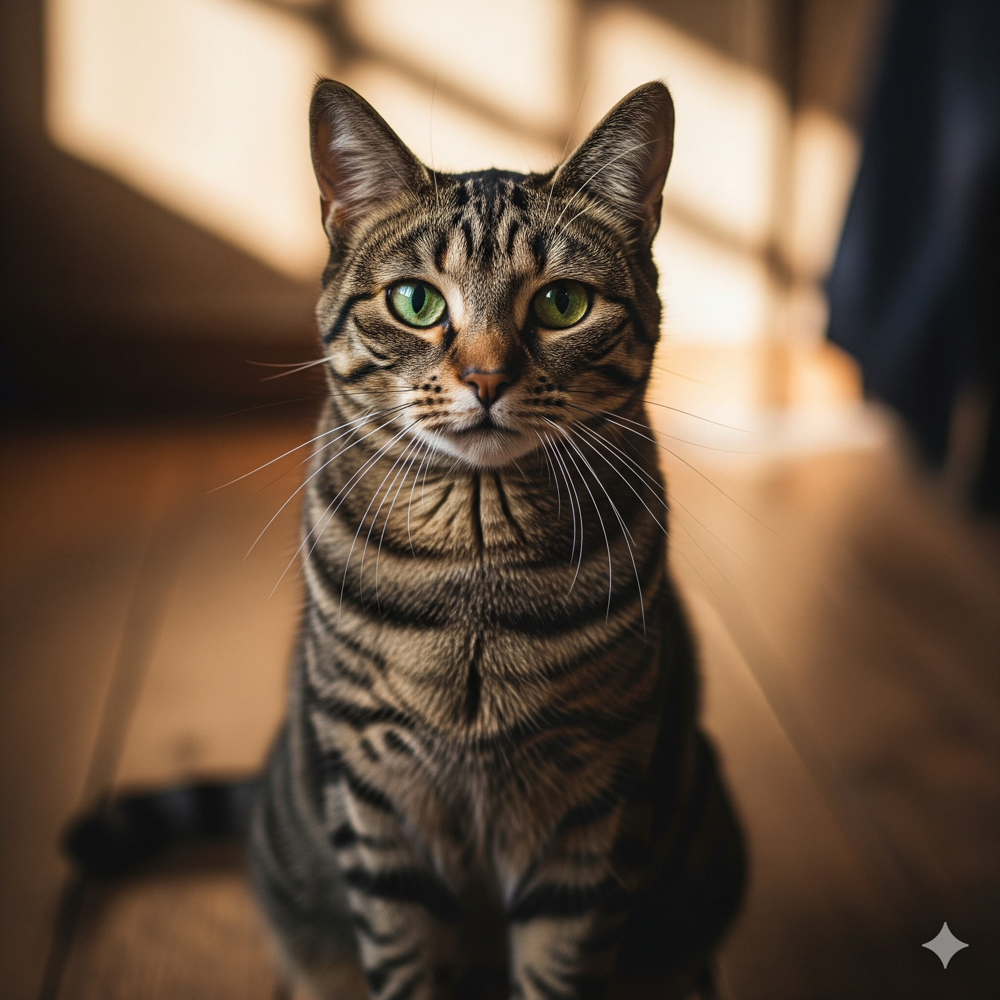
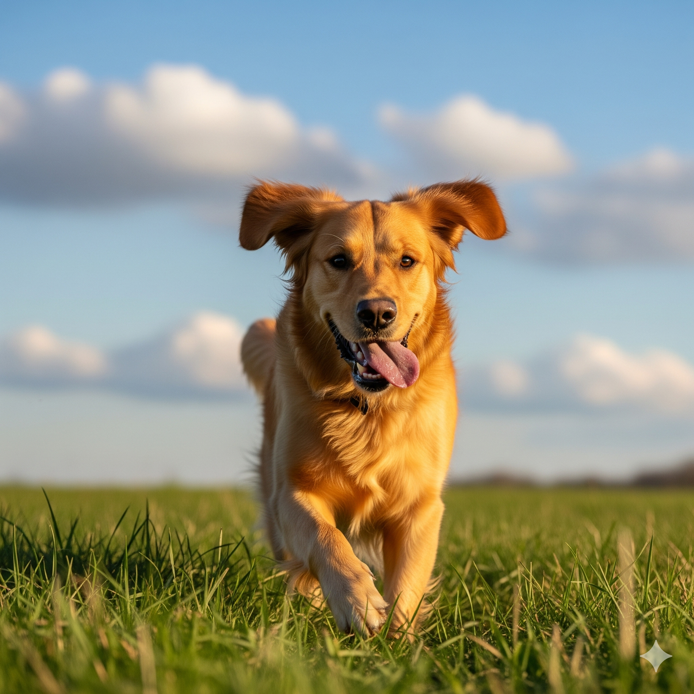

Bienvenido al sistema de adopción
Este sistema permite gestionar y facilitar el proceso de adopción de perros y gatos
Últimos 5 avisos de adopción
| Fecha de publicación | Comuna | Sector | Cantidad | Tipo | Edad | Foto |
|---|---|---|---|---|---|---|
| 2024-01-08 09:20 | Maipú | Ciudad Satélite | 2 | Gato | 3 Meses |  |
| 2022-11-30 17:40 | La Reina | Príncipe de Gales | 1 | Gato | 6 Meses |  |
| 2022-03-15 14:30 | Las Condes | El Golf | 2 | Perro | 4 Meses | |
| 2023-07-22 10:15 | Providencia | Nueva Providencia | 1 | Gato | 1 Año |  |
| 2023-05-14 08:50 | Ñuñoa | Plaza Ñuñoa | 1 | Perro | 2 Meses |  |